JM-Orgue
JM-Orgue to wirtualne organy piszczałkowe dla systemów Windows, macOS i Linux. Program odtwarza bezpośrednio zestawy sampli Hauptwerk i GrandOrgue, także duże zestawy surround, a gra się na nim za pomocą klawiatury MIDI, stołu gry lub myszy. Ta instrukcja przeprowadza przez program na zrzutach ekranu wersji 0.8.98.
© Martijn van der Kolk. Zrzuty ekranu wykonano na organach demonstracyjnych i własnych zestawach testowych; adresy sieciowe, tokeny dostępu i foldery użytkownika zostały zasłonięte.
1. Pierwsze kroki
Instalacja
Pobierz instalator najnowszej wersji ze strony wydań projektu (dla Windows JM-Orgue_<wersja>_x64-setup.exe) i uruchom go. Instalacja jest wykonywana dla jednego użytkownika i nie wymaga uprawnień administratora. Dla Windows istnieje też pakiet MSI, dla macOS DMG, a dla Linuksa AppImage lub deb.
Sam program można swobodnie używać. Zestawy sampli nie są dołączone: otrzymasz je od ich autorów. Na stronie startowej biblioteki wymieniono kilku autorów, którzy udostępniają zestawy za darmo.
Aktualizacja
JM-Orgue samodzielnie sprawdza, czy jest nowa wersja. Jeśli tak, u góry pojawia się komunikat. Wybierz Aktualizuj teraz: program pobierze aktualizację, sprawdzi podpis, zainstaluje ją i uruchomi się ponownie. Jeśli chcesz najpierw tylko pobrać, wybierz Pobierz. Możesz też sprawdzić ręcznie w Ustawieniach ogólnych → Aktualizacja i opinie → Sprawdź aktualizacje.
Trzy główne ekrany
U góry znajdują się trzy karty: Organy (gra), Ustawienia organów (wszystko, co dotyczy załadowanych organów) i Ustawienia ogólne (wszystko, co dotyczy całego programu). Klawisze F1, F2 i F3 przełączają między nimi bezpośrednio. Kłypa obok nazwy organów zamyka organy i wraca do biblioteki.
2. Biblioteka
Po uruchomieniu widzisz bibliotekę organów: jedna karta na organy ze zdjęciem, nazwą, budowniczym, miejscowością i liczbą rejestrów. Kliknij kartę, aby załadować organy.
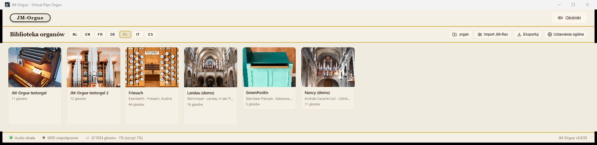
Dodawanie organów
- .organ: wybierz definicję organów (GrandOrgue
.organlub definicja Hauptwerk). Wybierasz plik definicji, a nie sam folder z samplami: tylko definicja zna rejestry, sprzęgła, tremulanty i ewentualne dodatkowe pozycje nagrania. - JM-Rec import: importuje zestaw sampli utworzony w JM-Rec.
- Eksportuj: tworzy z folderu sampli definicję organów (
.organ), którą potem załadujesz przyciskiem .organ.
Przyciski karty: zdjęcie, wyszukiwanie, usuwanie
Gdy wskażesz kartę, w prawym górnym rogu zdjęcia pojawiają się trzy przyciski: szukaj zdjęcia online (kula), wybierz zdjęcie samodzielnie (aparat) i usuń z biblioteki (krzyżyk). Usunięcie tylko zdejmuje kartę z biblioteki; pliki na dysku pozostają. Jeśli przytrzymasz kartę przez 3 sekundy, program wyszuka zdjęcie ponownie.
Wyszukiwanie online pokazuje kilka swobodnie dostępnych zdjęć z Wikimedia Commons, na podstawie nazwy, budowniczego i miejscowości zapisanych w zestawie. Kliknij zdjęcie, aby je przejąć; źródło i licencja pojawiają się pod kartą. Jeśli zestaw zawiera zbyt mało danych, aby coś znaleźć, wpisz sam frazę (kościół, miejscowość lub nazwę organów) w polu u góry okna i wybierz Szukaj.
3. Ładowanie organów i gra
Ładowanie
Podczas ładowania JM-Orgue wczytuje do pamięci początek każdego nagrania piszczałki; reszta jest doczytywana w trakcie gry. Duży zestaw surround może więc chwilę potrwać; pasek postępu pokazuje, jak daleko jest ładowanie.
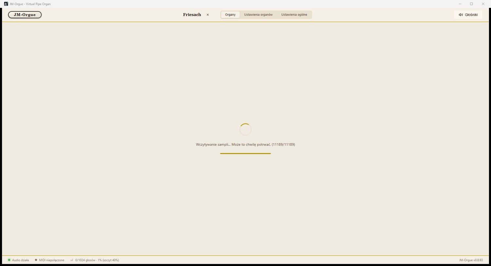
Silnik
Po załadowaniu silnik organów jest domyślnie włączony, gdy zestaw zawiera nagranie silnika, i od razu słychać delikatny powiew. Aby ćwiczyć w ciszy bez tego szumu, wyłącz przycisk Silnik na pasku narzędzi; żółty pasek pojawi się dopiero wtedy, gdy silnik naprawdę nie działa. Które dźwięki tła są domyślnie włączone i jak głośno, ustawiasz na pasku narzędzi w małym mikserze obok przycisku dźwięków tła.
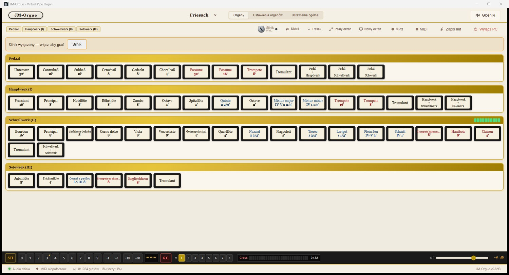
Rejestry, sprzęgła i tremulanty
Każda klawiatura ma własne pole z rejestrami. Kliknij przycisk rejestru, aby go wyciągnąć; wyciągnięte rejestry stają się żółte. Kolor nazwy wskazuje rodzinę: języczkowe są na przykład czerwone, mikstury i kwinty niebieskie. W każdym polu są też tremulant i sprzęgła (na przykład „Hauptwerk + Schwellwerk”). Zielony pasek po prawej w nagłówku klawiatury pokazuje położenie szafy ekspresyjnej.
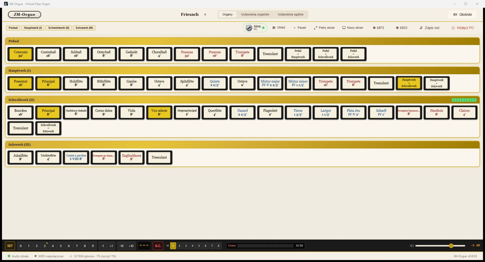
Pasek setzera
Na dole znajduje się pasek setzera z elementami obsługi stołu gry:
| Element | Działanie |
|---|---|
| SET i 0–9 | Naciśnij SET, a potem cyfrę, aby zapisać bieżącą rejestrację; sama cyfra przywołuje ją. Mała kropka przy cyfrze oznacza, że zapisano tam rejestrację. |
| −1 / +1, −10 / +10 | Przechodzi do poprzedniej lub następnej rejestracji albo o dziesięć dalej. |
| G.C. | General Cancel: wszystkie rejestry wyłączone. |
| M 1–8 | Poziomy pamięci: osiem osobnych banków rejestracji. |
| Cresc | Crescendo generalne (zob. rozdział 7). Pasek pokazuje bieżący stopień. |
| Suwak głośności | Głośność główna. Dwukrotne kliknięcie przywraca wartość domyślną; kółkiem myszy zmieniasz ją co 1 dB. |
Każdy przycisk paska setzera można powiązać z przyciskiem na własnym stole gry: kliknij prawym przyciskiem (lub przytrzymaj 3 sekundy), a potem naciśnij przycisk na stole gry.
Nauka kanału MIDI dla klawiatury
Nie trzeba najpierw wchodzić do Ustawień organów: kliknij prawym przyciskiem myszy na nazwie sekcji nad rejestrami — lub przytrzymaj ją 2 sekundy na ekranie dotykowym — a program poprosi o najniższą i najwyższą nutę tej klawiatury. Kanał jest ustawiany bez opuszczania stołu gry.
4. Pasek narzędzi
Nad rejestrami znajduje się pasek narzędzi. Po lewej klawiatury (Pedał, Hauptwerk, …) są przyciskami: wyświetlasz lub ukrywasz nimi klawiaturę. Po prawej są poniższe funkcje.
| Przycisk | Co robi |
|---|---|
| Silnik | Włącza lub wyłącza silnik organów. |
| Układ | Otwiera menu układu (zob. niżej). |
| Pasek | Pokazuje lub ukrywa główny pasek z kartami i przyciskiem profilu. |
| Pełny ekran | Tryb stołu gry: tylko rejestry i pasek setzera (F11). |
| Nowy ekran | Otwiera dodatkowe okno z tymi samymi rejestrami, na przykład dla drugiego monitora lub drugiej klawiatury. |
| MP3 | Nagrywa to, co słyszysz. Nagranie trafia do Dokumenty\JM-Orgue-opnames. Kliknij czerwony licznik, aby zatrzymać; program poda potem, gdzie jest plik. |
| MIDI | Nagrywa to, co grasz (tylko nuty), jako plik .mid. Kliknij niebieski licznik, aby zatrzymać, i wybierz miejsce zapisu. |
| Zapis nut | Otwiera okno notacji: nuty pojawiają się w trakcie gry, z warstwami, overdubem i edycją. Można tam też otworzyć istniejący plik MIDI. |
| Wyłącz PC | Zamyka oprogramowanie i komputer, po potwierdzeniu; ostatni stan zostaje wcześniej zapisany. Prawy przycisk lub przytrzymanie 3 sekundy wiąże przycisk z przyciskiem na stole gry. |
Menu układu
Przyciskiem Układ dostosowujesz wygląd do ekranu: Dopasuj dobiera rozmiar przycisków tak, by wszystkie rejestry zmieściły się na ekranie, przyciski minus/plus zmieniają szerokość i wysokość przycisków, a ponadto wybierasz klawiatury jedna pod drugą lub obok siebie (pionowo), okrągłe zamiast prostokątnych przycisków oraz miejsce sprzęgieł (w klawiaturze lub w osobnym pasku). Wybór jest zapamiętywany dla każdych organów.
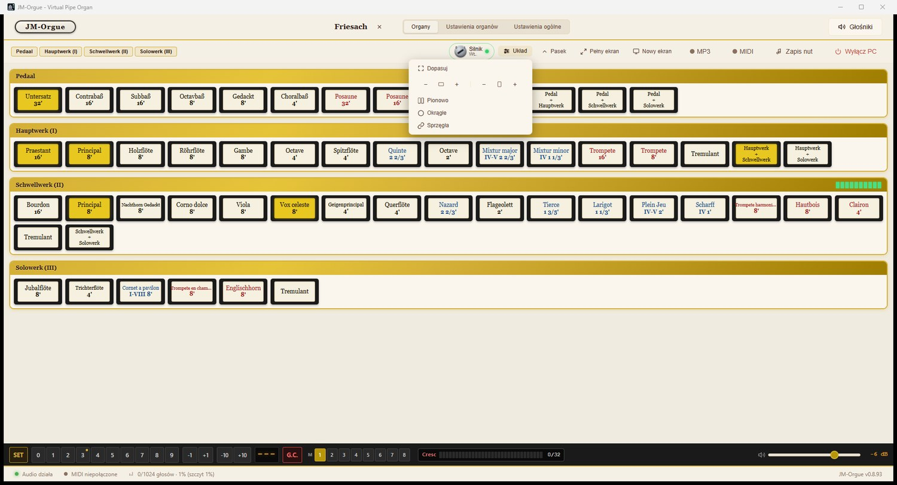
Pełny ekran (tryb stołu gry)
W tym trybie znikają pasek tytułu, pasek zadań Windows i pasek główny: widzisz tylko rejestry i pasek setzera. U góry jest wąski pasek z czterema przyciskami: Paski (tymczasowe przywrócenie paska głównego), Silnik (włączony lub wyłączony), Wyjdź z pełnego ekranu i Wyłącz PC (zamknięcie oprogramowania i komputera). F11 włącza i wyłącza ten tryb; Esc go wyłącza.
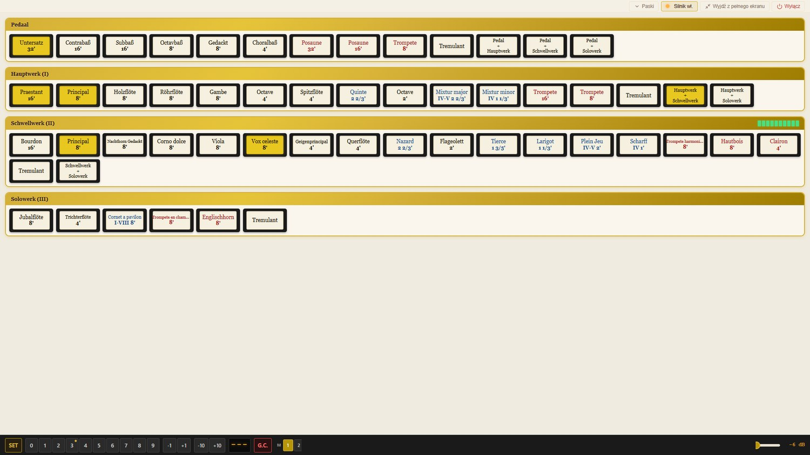
Drugi ekran
Nowy ekran otwiera osobne okno, które możesz przeciągnąć na inny monitor albo zostawić małe obok głównego okna. Ma własne ustawienia układu: jeśli przyciski są za małe, wybierz Układ i ustaw szerokość oraz wysokość przycisków albo wybierz klawiatury jedna pod drugą lub obok siebie.
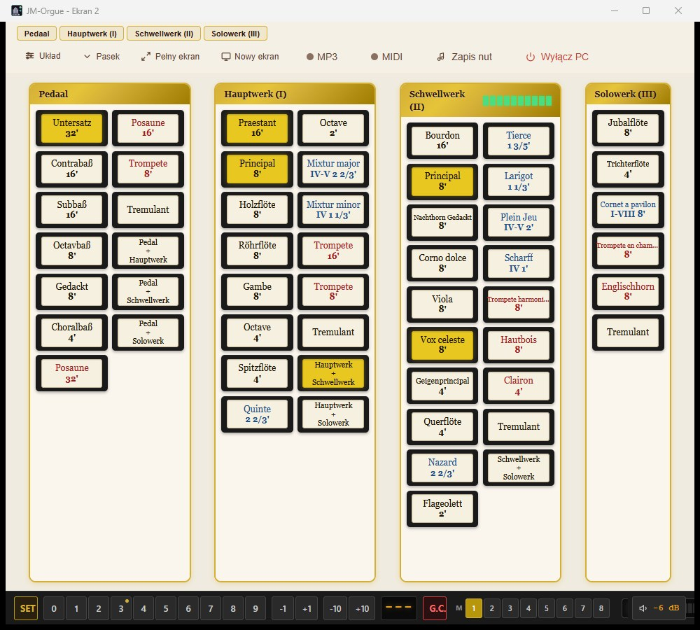
5. Kilka pozycji słuchania
Niektóre zestawy sampli nagrano w kilku miejscach kościoła, na przykład blisko, z przodu, w połowie i z tyłu. Taki zestaw pokazuje na pasku narzędzi przyciski Perspektywa, po jednym na pozycję. Kliknij pozycję, aby ją włączyć lub wyłączyć; może brzmieć kilka jednocześnie. Po ich prawej stronie jest pozycja słuchania: suwak między „przy organach” a „w głębi” płynnie miksuje nagrane pozycje.
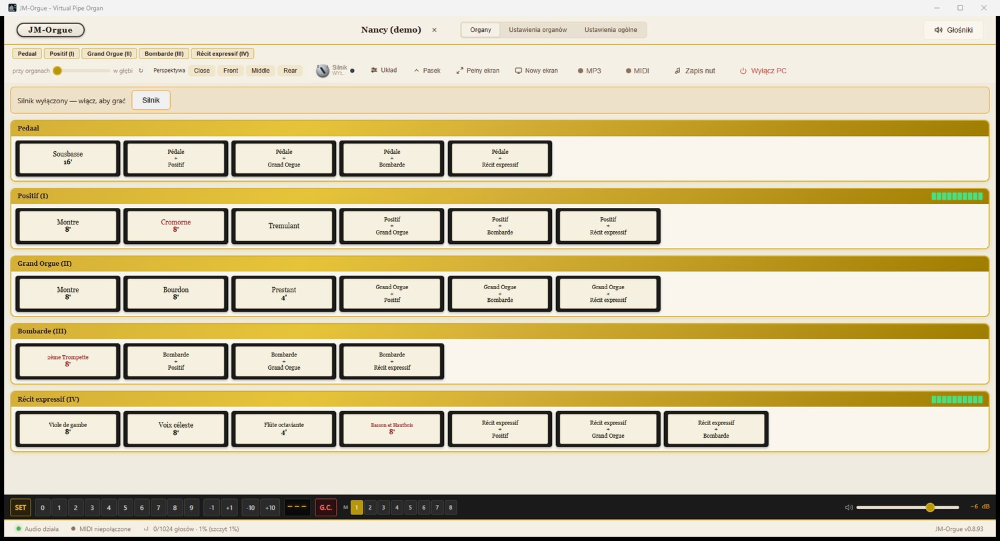
6. Kreator dla nowych organów
Gdy ładujesz organy po raz pierwszy, automatycznie uruchamia się kreator „Konfiguracja organów”. W sześciu krokach omawia wszystko, co trzeba połączyć z własnym stołem gry. Wszystko można później zmienić, a kreator uruchomisz ponownie w Ustawieniach organów → Routing → Kreator. Później zamyka kreator i pyta ponownie przy następnym otwarciu; Pomiń (krok 1) pomija go całkowicie.
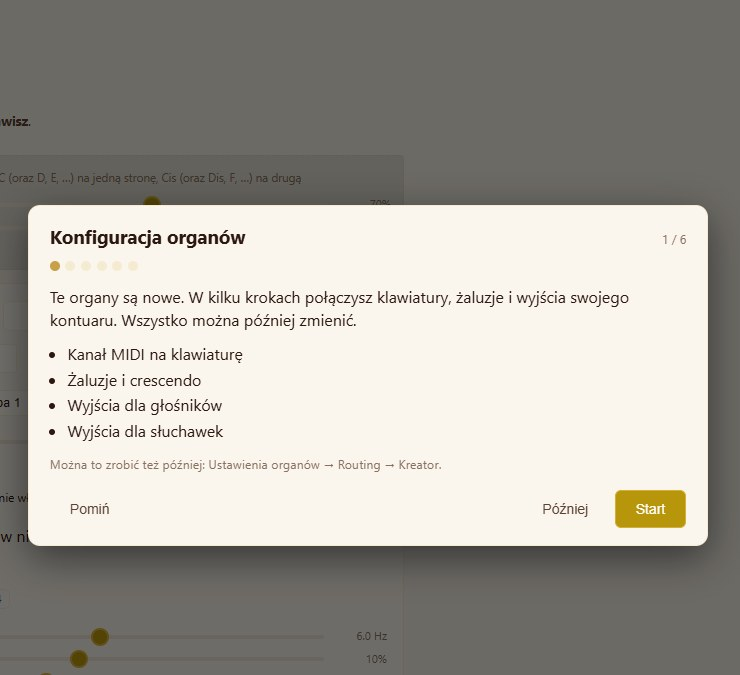
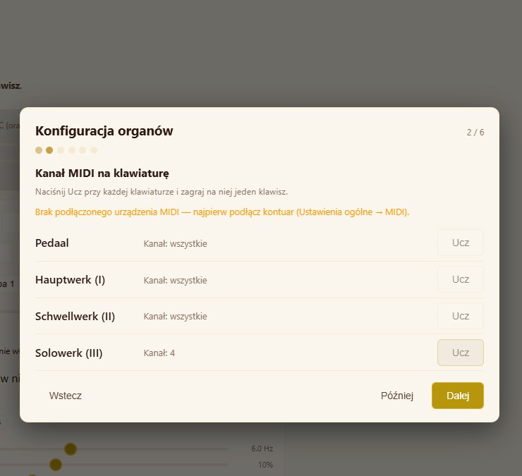
- Start: przegląd kroków.
- Kanał MIDI na klawiaturę: przy każdej klawiaturze wybierz Ucz i zagraj klawisz na tej klawiaturze. Program zapamięta kanał. Przyciski działają tylko wtedy, gdy podłączone jest urządzenie MIDI (Ustawienia ogólne → MIDI); w przeciwnym razie pojawia się ostrzeżenie.
- Żaluzje i crescendo: wybierz Ucz i przesuń pedał całkiem zamknięty i całkiem otwarty. To samo dotyczy crescenda generalnego. Jeśli zestaw ma szafy ekspresyjne per głos (rozdział 9), też pojawią się tutaj.
- Wyjścia dla głośników: wybierz sterownik i urządzenie, zapisz je jako profil „Głośniki” i wybierz dla każdej klawiatury wyjścia interfejsu audio, na których ma brzmieć. Niżej są te same wybory dla dźwięku silnika, szumu otoczenia i kliknięć mechaniki, rejestrów efektowych i szumu tremulanta, o ile zestaw je ma.
- Wyjścia dla słuchawek: to samo dla drugiego profilu, na przykład wyjścia słuchawkowego. Od tej chwili między obydwoma profilami przełączasz przyciskiem Głośniki w prawym górnym rogu.
- Gotowe: ustawienia zostały zapisane przy tych organach.
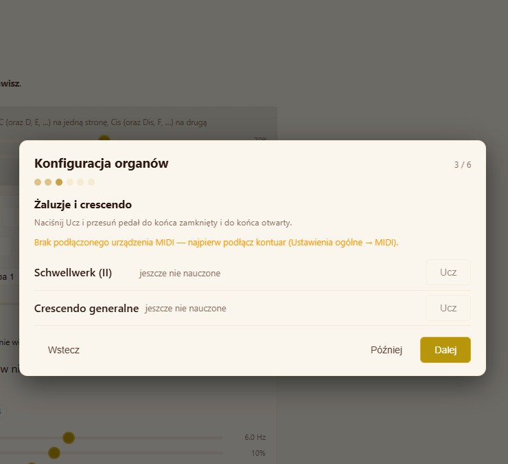
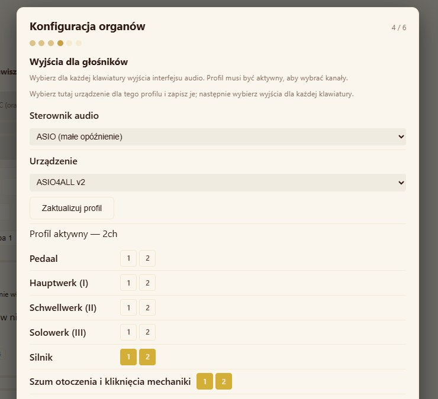
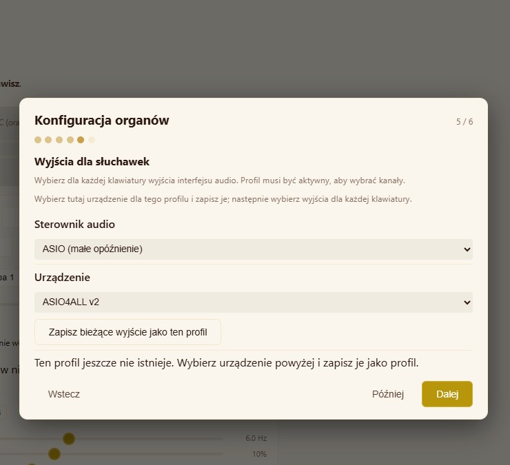
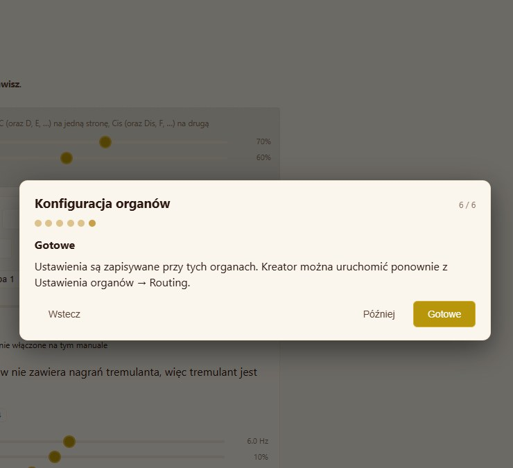
7. Ustawienia organów
Wszystkie ustawienia dotyczące załadowanych organów są zapisywane przy tych organach. U góry jest pięć kart: Brzmienie, Crescendo, Kolejność rejestrów, Routing i Wszystko; ostatnia układa wszystkie bloki jeden pod drugim.
Brzmienie
Pierwszy blok zawiera ustawienia główne:
- Głośność: głośność główna tych organów.
- Strój: „Oryginał” gra piszczałki tak, jak zostały nagrane. Inne stroje (równomierny i temperacje historyczne) dostrajają piszczałki na podstawie zmierzonej wysokości każdego nagrania. Pod wyborem widzisz, ile piszczałek ma zmierzoną wysokość. Za pomocą Własny strój... sam ustawiasz odchylenie dla każdego dźwięku w centach.
- Dostrojenie: wszystko razem wyżej lub niżej, w centach.
Pogłos reguluje pogłos. Jeśli zestaw ma już akustykę kościoła w nagraniach, jest to zaznaczone (z przyciskiem Powrót do nagrania (pogłos wyłączony), aby wyłączyć dodatkowy pogłos): dodatkowy pogłos jest wtedy kwestią gustu. Wybierasz między Algorytmiczny (obliczony pogłos z RT60, opóźnieniem, tłumieniem i wielkością pomieszczenia, także jako preset) a Splotowy (IR) z własną odpowiedzią impulsową (IR). Za pomocą Miks określasz, ile pogłosu słychać.
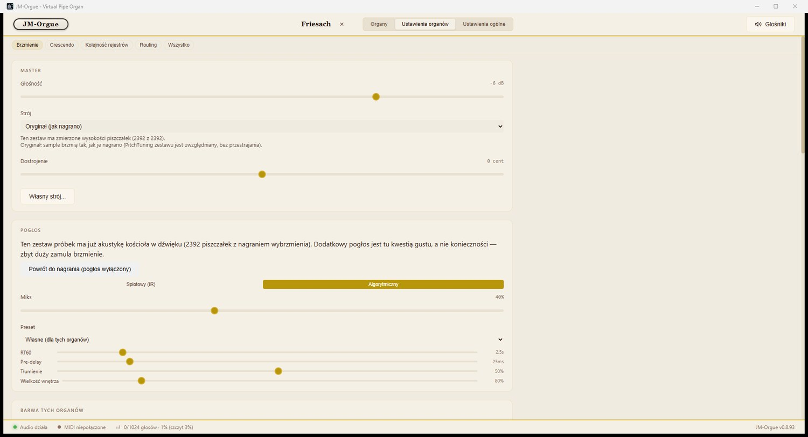
Barwa tych organów to osobna regulacja barwy dla każdych organów; korekcja dla słuchawek lub głośników jest oddzielna, w ustawieniach ogólnych. Model powietrza sprawia, że organy „oddychają”: akord z wieloma rejestrami obniża ciśnienie powietrza, jak w prawdziwych organach, a flety i języczkowe reagują na to różnie. Wybierasz liczbę grup powietrza (które klawiatury dzielą te same miechy) oraz dla każdej grupy wielkość miecha, tłumienie, maksymalny spadek ciśnienia i charakter powietrza.
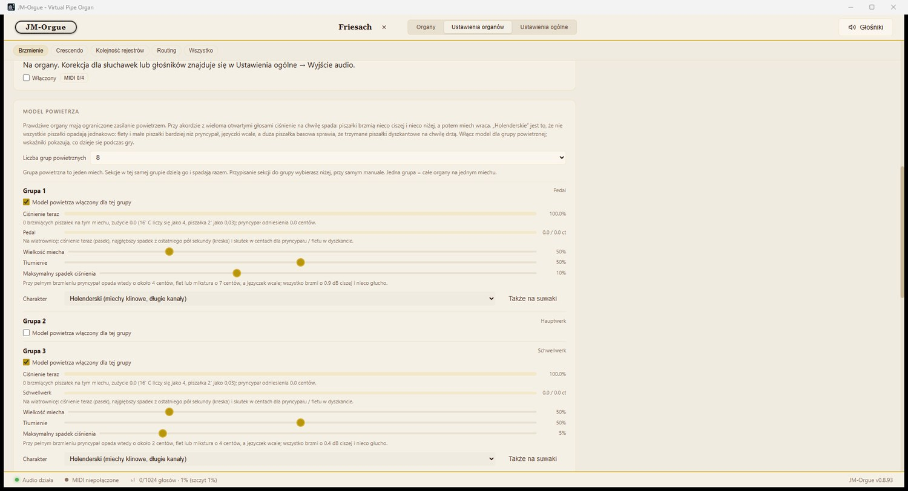
Dźwięki tła pokazuje ciągłe dźwięki zawarte w zestawie, takie jak silnik i szum pomieszczenia. Ustawiasz głośność, włączasz lub wyłączasz silnik i możesz włączyć mechanikę klawiatury (klikające klawisze). Mechanika klawiatury jest domyślnie wyłączona, bo zajmuje dużo pamięci i wymaga ponownego załadowania organów.
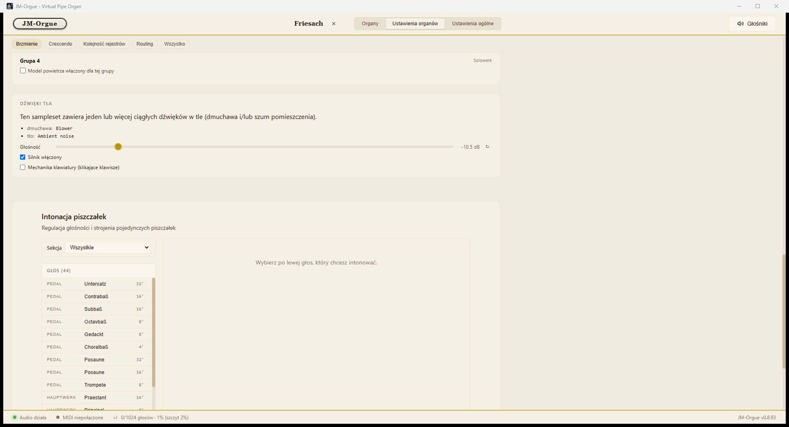
Na dole jest intonacja piszczałek: wybierz po lewej rejestr i dostosuj głośność i strój każdej piszczałki z osobna.
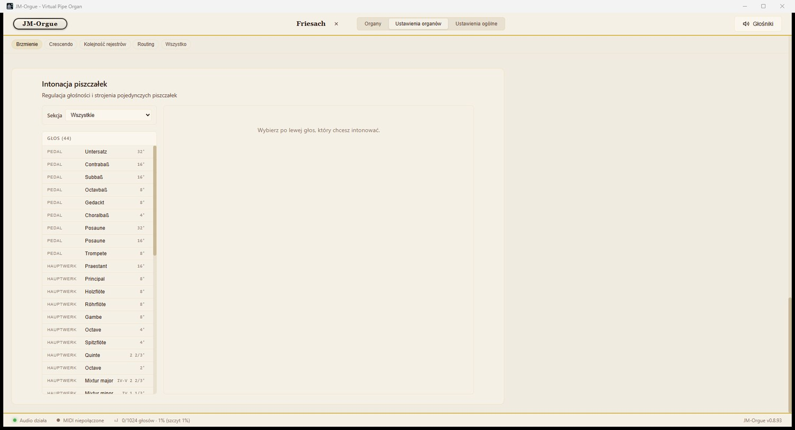
Crescendo
Crescendo generalne wyciąga krok po kroku coraz więcej rejestrów, gdy poruszasz pedałem crescenda. Sam decydujesz, które rejestry wchodzą w który stopień:
- Włączone włącza crescendo; Stopnie to liczba stopni.
- Auto-wypełnienie wpisuje propozycję dopasowaną do rejestrów tych organów. Za pomocą opcji poniżej decydujesz, czy sprzęgła się włączają, czy rejestry barwne (sesquialtera, kornet, tercja), języczkowe 32′ i szamady się włączają oraz czy sprzęgła oktawowe wchodzą dopiero w tutti. Wyczyść opróżnia macierz.
- W macierzy kliknięcie pola włącza lub wyłącza dany rejestr w tym stopniu; Shift+kliknięcie ustawia go dla wszystkich stopni od tego stopnia.
- Nauka pedalu wiąże twoje pedał crescenda; na dole możesz też ręcznie wpisać kanał i numer CC.
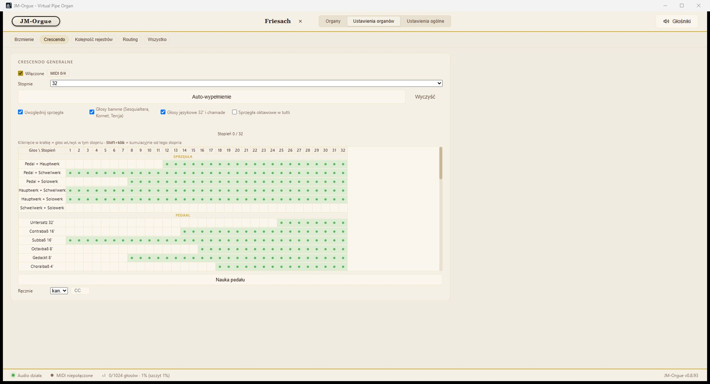
Kolejność rejestrów
Tu określasz kolejność rejestrów w każdej klawiaturze. Przeciągnij rejestr za uchwyt, aby go przesunąć. Przy każdym rejestrze widzisz stopaż i rodzinę (kolor nazwy). Strzałkami zmieniasz kolejność krok po kroku, a Reset przywraca kolejność zestawu.
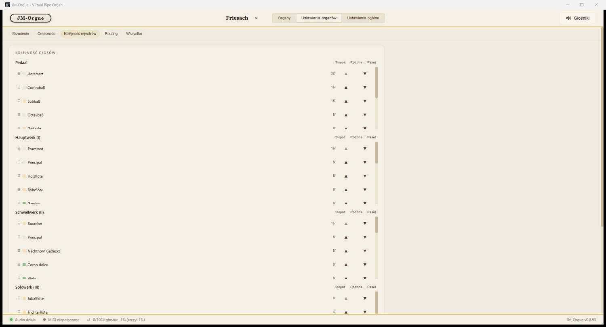
Routing
Ta karta łączy organy z twoim sprzętem. U góry jest blok dla każdej klawiatury:
- Kanał: kanał MIDI, którego klawiatura nasłuchuje („Wszystkie” = każdy kanał). Nauka ustala kanał i zakres, gdy zagrasz najpierw najniższy, a potem najwyższy klawisz.
- Transp: transpozycja w półtonach. Zakres: najniższy i najwyższy klawisz. Krótka oktawa: dla zestawów z krótką oktawą basową.
- Szafa ekspresyjna: włącza szafę ekspresyjną tej klawiatury; pojawiają się wtedy przyciski do nauki pedału, ustawienia minimalnej głośności i częstotliwości odcięcia zamkniętej szafy.
- Zasilanie powietrzem: do której grupy powietrza należy klawiatura.
- Panorama i Wyjścia: miejsce w obrazie stereo i kanały wyjściowe interfejsu audio, na których brzmi klawiatura. Dwa kolejne wyjścia tworzą parę stereo; pojedynczy kanał brzmi mono.
- C/Cis: rozdziela piszczałki na dwie strony, jak wiatrownice C i Cis w prawdziwych organach; globalna siła i spadek są w bloku powyżej.
- LFO tremulanta: jeśli zestaw nie ma prawdziwych nagrań tremulanta, program go oblicza. Prędkość, amplitudę i wysokość ustawiasz tutaj.
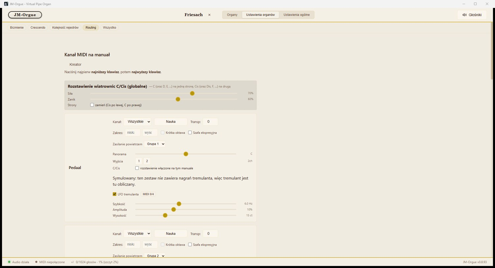
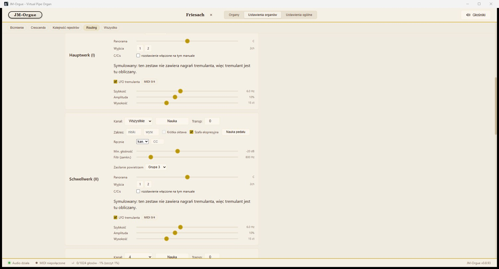
Niżej jest Wyjście audio dźwięków tła: dla każdego rodzaju dźwięku wybierasz, z których wyjść korzysta. Silnik to dźwięk silnika; Szum otoczenia i kliknięcia mechaniki dotyczy szumu pomieszczenia oraz kliknięć rejestrów i klawiszy; zestawy z rejestrami efektowymi (cymbelstern, słowik i tym podobne) i szumem tremulanta mają własny wiersz. Ma to znaczenie przede wszystkim przy więcej niż dwóch wyjściach, gdy klawiatury brzmią na innych kanałach niż domyślne 1–2. Bezpośrednio pod spodem:
- Ciągła klawiatura: klawisze poza nagranym zakresem rejestru grają najbliższą piszczałkę, przesuniętą na właściwą wysokość, zamiast milczeć. Klawiatura 61-klawiszowa gra więc dalej na zestawie z mniejszą liczbą dźwięków.
- Automatycznie stroić piły (tak brzmi ta etykieta w programie; chodzi o piszczałki): dostraja piszczałki na podstawie ich zmierzonej wysokości, zachowując celowo falowane rejestry. Domyślnie włączone.
- Korekta wysokości: wszystko razem wyżej lub niżej w centach (Zero przywraca wartość).
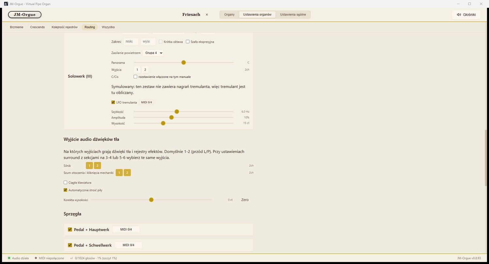
Dalej w dół znajdują się Sprzęgła (włączanie i wyłączanie, z przyciskiem MIDI przy każdym sprzęgle) oraz „Dodatkowe kopuły” (tak ten blok nazywa się w programie; chodzi o dodatkowe sprzęgła): sprzęgła, których nie ma w zestawie sampli, ale które wynikają z układu klawiatur; zaznacz, co chcesz dodać, a pojawią się od razu na pasku sprzęgieł. Przypisania MIDI to jedna lista wszystkich przypisań MIDI tych organów, które możesz tam ręcznie zmieniać, usuwać lub dodawać. Na dole Otwórz .mid pozwala odtworzyć plik MIDI na organach.
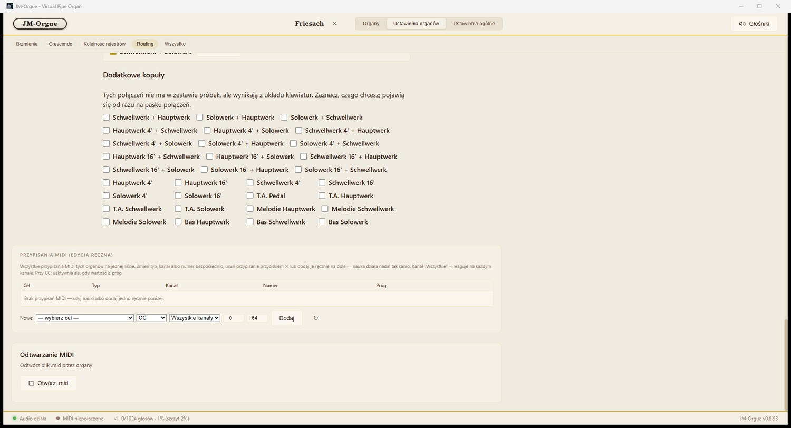
8. Ustawienia ogólne
Te ustawienia dotyczą całego programu. Karty to Wyjście audio, Korekta sampli, MIDI, Ucz przyciski, Widok i Aktualizacja i opinie.
Wyjście audio
- Sterownik audio i urządzenie: dla najmniejszego opóźnienia wybierz ASIO (na przykład sterownik twojego interfejsu audio); WASAPI działa ze standardową kartą dźwiękową Windows. Wiersz „Aktualnie” niżej pokazuje, co teraz gra.
- Sygnał testowy: kliknij numer kanału, aby wysłać dźwięk dokładnie na to wyjście i usłyszeć, która wtyczka należy do którego głośnika.
- Polifonia i Rdzenie obliczeniowe do miksowania: maksymalna liczba jednocześnie brzmiących piszczałek i liczba rdzeni procesora, na które rozkłada się praca miksowania. Wybór domyślny pasuje do twojego komputera; miernik obciążenia pokazuje efekt.
- Odtwarzaj sample stereo w stereo: zachowuje obraz stereo nagrań stereo. Wyłączone oznacza miks mono i zmniejsza o połowę zużycie pamięci takich zestawów.
- Bufor startowy na nagranie (nowość w tej wersji): ile każdego nagrania piszczałki jest od razu w pamięci: 200 ms, 300 ms, 500 ms, 1 s lub 2 s (domyślnie). Krótszy bufor oszczędza dużo pamięci i czasu ładowania; reszta jest doczytywana w trakcie gry. Wybór działa po ponownym załadowaniu organów.
- Rozmiar bufora: mniejszy oznacza mniejsze opóźnienie, ale bardziej obciąża komputer. Zastosuj aktywuje wybór.
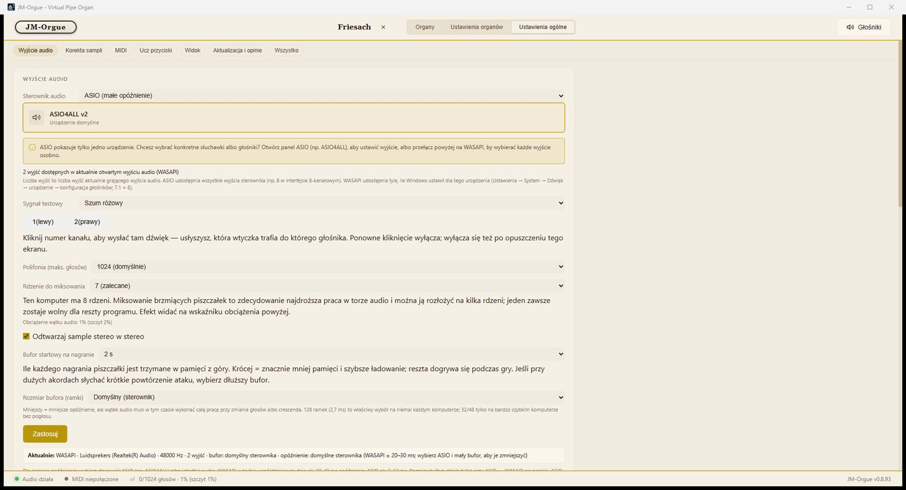
Profile wyjścia zapamiętują dwa kompletne ustawienia wyjścia, na przykład głośniki przez ASIO i słuchawki przez WASAPI, wraz z wyborem kanałów dla każdej klawiatury. Wybierz żądane wyjście, kliknij Zapisz bieżący wybór przy Głośnikach lub Słuchawkach, a potem przełączaj przyciskiem Głośniki w prawym górnym rogu lub nauczonym przyciskiem MIDI. Aktywny profil jest zaznaczony.
Korekcja dla słuchawek lub głośników stosuje korekcję barwy do samego wyjścia (a nie do organów): wybierz, dla którego profilu obowiązuje, włącz ją i wybierz preset z listy AutoEq albo zaimportuj lub wyeksportuj własną korekcję.
Niżej są opcje automatycznego uruchamiania programu z Windows, automatycznego ładowania ostatnio otwartych organów, zamykania całego oprogramowania krzyżykiem na dodatkowym ekranie oraz przywracania ostatniej rejestracji. Automatyczne archiwum MIDI zapisuje w tle wszystko, co grasz, jako plik .mid na sesję: zaczyna od pierwszej nuty i kończy po ciszy.
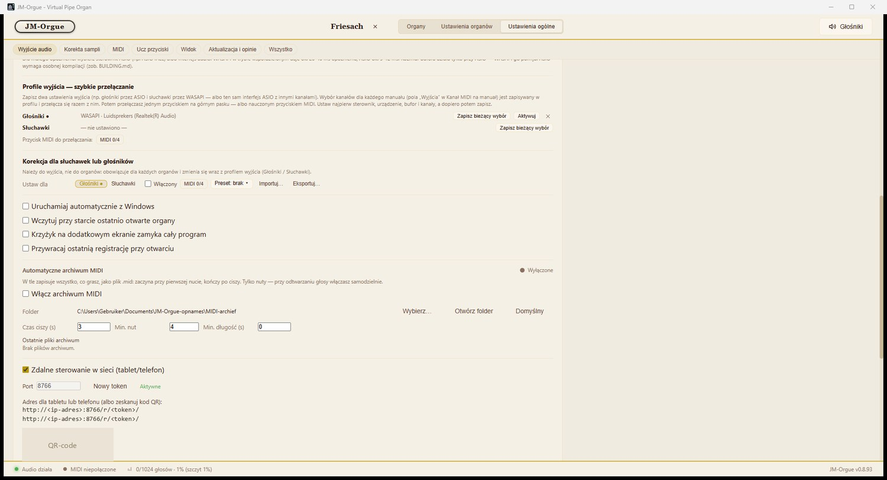
Za pomocą Zdalne sterowanie w sieci (tablet/telefon) sterujesz organami z tabletu lub telefonu w tej samej sieci Wi-Fi. Program pokazuje adres i kod QR do zeskanowania, a ty wybierasz, które elementy i które klawiatury pojawiają się na ekranie zewnętrznym. Za pierwszym razem Zapora Windows pyta, czy JM-Orgue może odbierać połączenia: wybierz „Zezwól na dostęp” dla sieci prywatnych.
Na dole jest częstotliwość próbkowania. Wynika ona z samej karty dźwiękowej: w ASIO ustawiasz ją w panelu sterownika, w WASAPI w ustawieniach dźwięku Windows.
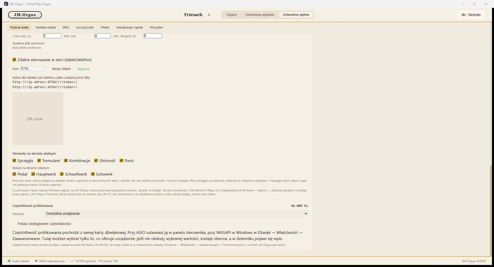
Korekta sampli
Dwa narzędzia do porządkowania sampli załadowanych organów. Cisza przed atakiem znajduje i wycina ciszę na początku sampli (próg ciszy w dB i zachowywany początek ustawiasz sam); Pętle znajduje dobrą pętlę podtrzymania, wpisuje crossfade dla płynnego przejścia i zapisuje punkty pętli w pliku, z opcją zrobienia tego tylko dla plików bez pętli. Przyciskiem Skanuj najpierw sprawdzasz, co by się zmieniło. Oryginały są najpierw przechowywane w folderze _backup, zanim pliki zostaną nadpisane.
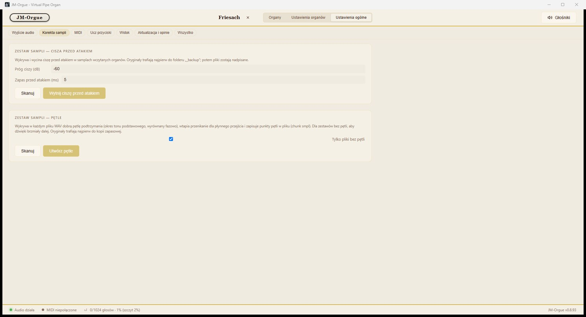
MIDI
Wejście MIDI pokazuje podłączone urządzenia MIDI (przyciskiem Odśwież urządzenia szukasz ponownie); w Bluetooth MIDI szukasz urządzeń bezprzewodowych przyciskiem Skanuj. Sygnalizacja zwrotna (MIDI out) sprawia, że twój stół gry świeci zgodnie z rejestracją: wybierz protokół (lampki rejestrów przez Note On/Off, wyświetlacz tekstowy Hauptwerk lub stół Johannus/Content), wyjście MIDI, kanał i nutę bazową. Każdy rejestr dostaje wtedy automatycznie numer nuty od nuty bazowej albo uczysz prawdziwy przycisk stołu gry dla każdego rejestru za pomocą Nauka dla każdego głosu….
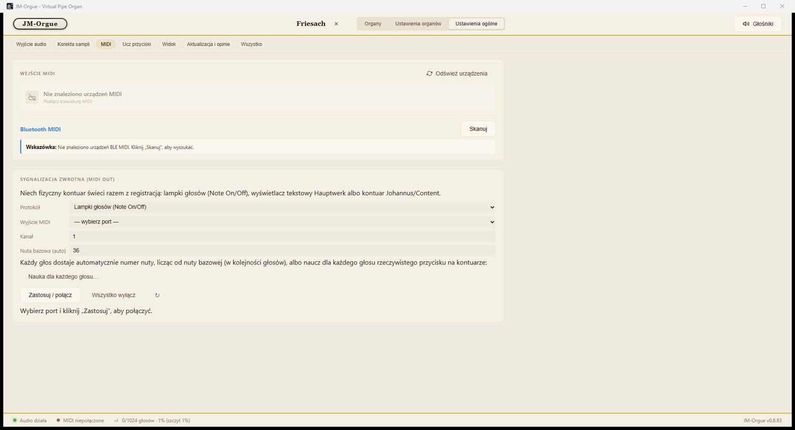
Ucz przyciski
Tu uczysz stałe przyciski stołu gry (pistony): stroik, SET, kroki presetów, poziomy pamięci i wyłączanie komputera. Przyciski cyfr 0–9 uczysz na samym pasku setzera (prawy przycisk lub przytrzymanie 3 sekundy).
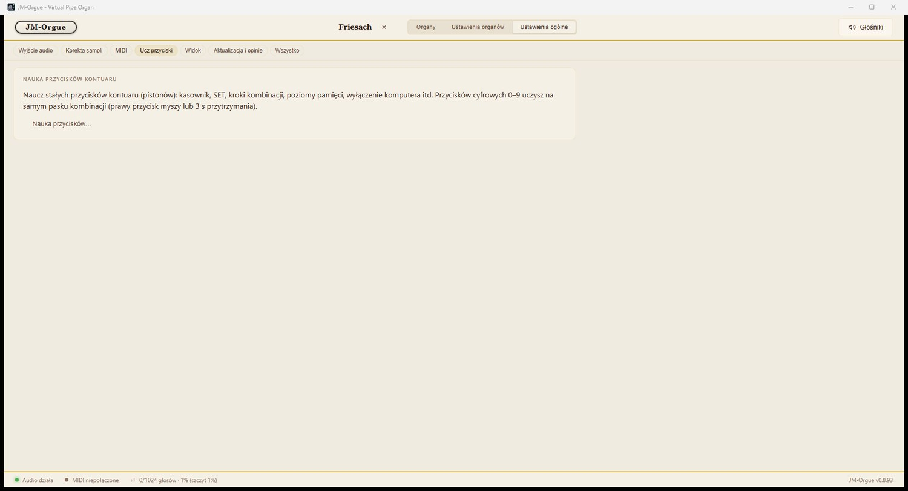
Widok
Wybierz język programu (Nederlands, English, Français, Deutsch, Polski, Italiano i Español) oraz wygląd: pięć gotowych presetów kolorów (Podstawowy, Klasyczne drewno, Nowoczesny minimalistyczny, Noc i Wieczór) albo zestaw własne kolory, nadaj im nazwę i wyeksportuj. Niżej dostosowujesz krój, rozmiar i grubość pisma rejestrów oraz tło.
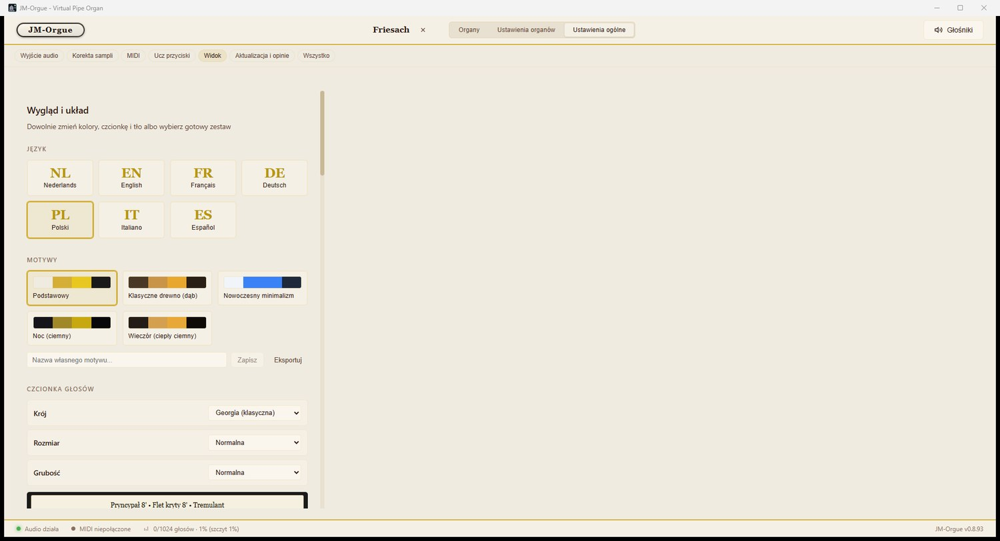
Aktualizacja i opinie
Znajdziesz tu numer wersji, informacje o źródłach użytych presetów słuchawek i danych głośników oraz przyciski Wyślij opinię…, Przez GitHub (issues) i Sprawdź aktualizacje.
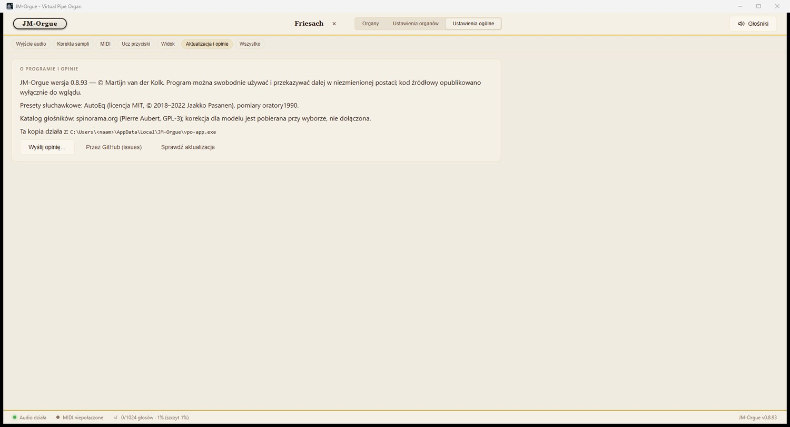
9. Konfiguracja akustyczna zestawu
Definicja organów może odwoływać się do dodatkowego pliku, JM-ACOUSTICS.json, opisującego akustykę zestawu: szafy ekspresyjne przypisane do głosu zamiast do klawiatury, odpowiedzi impulsowe dla pogłosu, trasy miksowania i wyjścia. Jeśli twój zestaw ma taki plik, poznasz to po dodatkowym bloku w Ustawieniach organów → Brzmienie.
- Program wczytuje plik i go sprawdza: rozmiar pliku, czy wszystkie odwołania są poprawne, czy ścieżki pozostają w folderze organów i czy powiązania piszczałek pasują do załadowanej definicji. Jeśli coś jest nie tak, organy po prostu grają według zwykłej definicji, a blok podaje, dlaczego konfiguracji nie wczytano.
- Szafy ekspresyjne per głos: głosy, które plik umieszcza w szafie, dostają własną szafę ekspresyjną i własny pedał ekspresji, niezależnie od klawiatury, na której grają. Głos używany przez dwie klawiatury zawsze podąża więc za tą samą szafą. Pedał uczysz w Routing (Nauka pedalu) lub w kreatorze.
- Odpowiedzi impulsowe z zestawu są wymienione pod blokiem, z kanałami i czasem trwania. Przyciskiem Użyj jako pogłosu przejmujesz jedną jako pogłos splotowy. Rola kanałów w takich nagraniach nie jest określona; program traktuje dwa pierwsze jako parę stereo.
- Trasy miksowania, szyny wyjściowe i przejścia efektów z pliku nie są na razie stosowane automatycznie; nadrzędna pozostaje zwykła definicja.
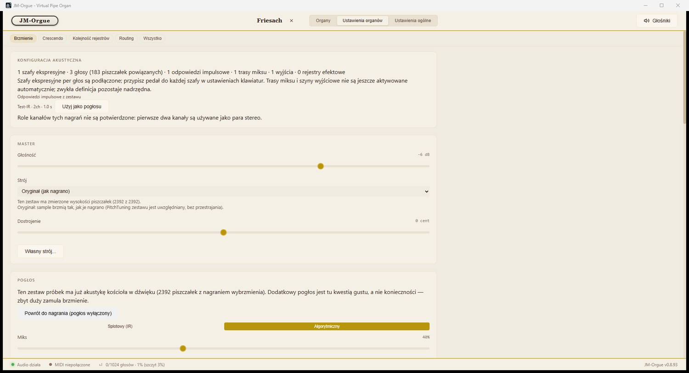
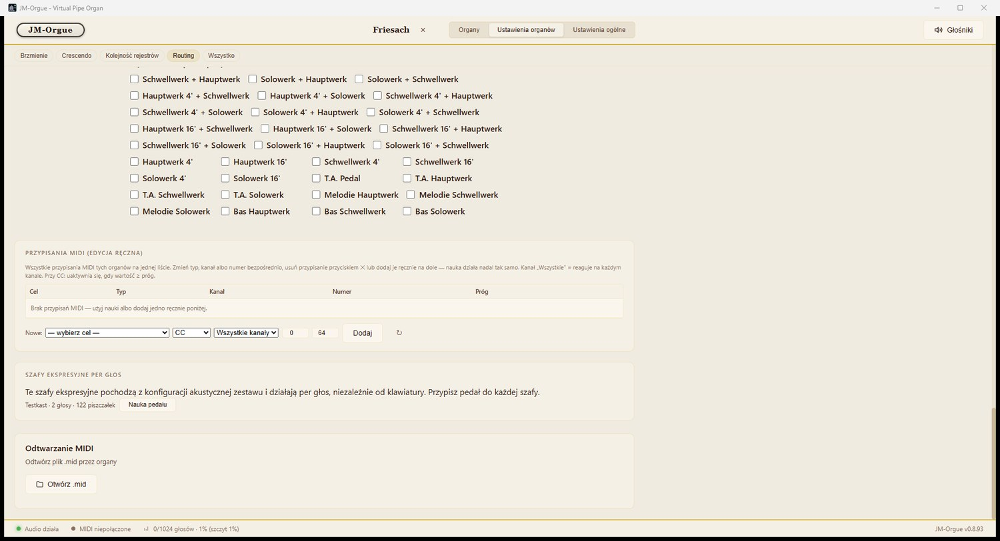
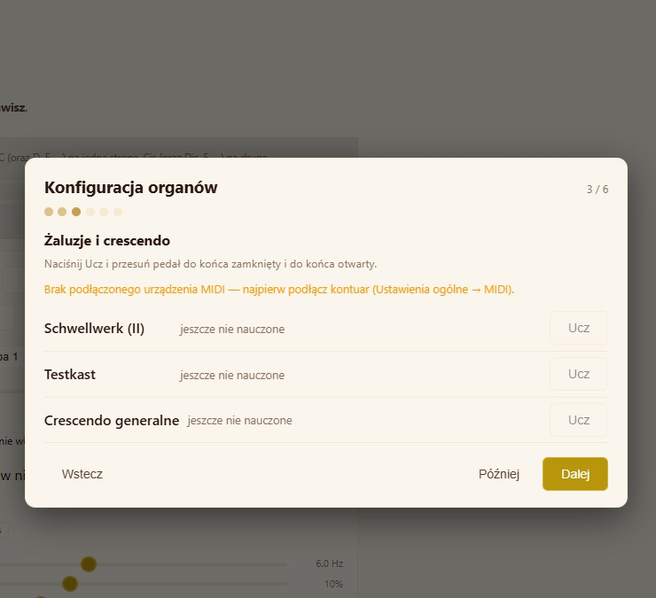
10. Skróty klawiszowe i wskazówki
| Klawisz | Funkcja |
|---|---|
| F1 F2 F3 | Organy, Ustawienia organów i Ustawienia ogólne. |
| F11 | Pełny ekran (tryb stołu gry) włączony lub wyłączony. |
| Esc | Wyjście z pełnego ekranu. |
| Prawy przycisk lub 3 s przytrzymania | Na przycisku paska setzera: powiązanie tego przycisku z przyciskiem stołu gry (nauka MIDI). |
| Dwukrotne kliknięcie głośności | Głośność główna wraca do wartości domyślnej. |
| Karta przytrzymana 3 s | W bibliotece: ponowne wyszukanie zdjęcia tej karty. |
- Wszystkie ustawienia są zapisywane przy każdych organach, także gdy zamkniesz organy lub program.
- Dla stałego stołu gry: włącz Automatyczne uruchamianie z Windows i Automatyczne ładowanie ostatnio otwartych organów i używaj trybu stołu gry.
- Przy więcej niż dwóch wyjściach: wybierz wyjścia dla każdej klawiatury w Routing, a potem te same wyjścia dla dźwięków tła.
11. Rozwiązywanie problemów i opinie
| Problem | Co możesz spróbować |
|---|---|
| Brak dźwięku | Czy silnik pracuje? Czy na dole jest „Audio aktywne”? Czy w Wyjściu audio ustawiono właściwe urządzenie i czy wyjścia dla klawiatur pasują do twojego interfejsu audio? Użyj sygnału testowego, aby usłyszeć wyjścia. |
| Klawiatura nie reaguje | Na dole jest „MIDI niepołączone”, dopóki nie ma urządzenia MIDI. Sprawdź Ustawienia ogólne → MIDI i kanał MIDI dla klawiatury w Routing. |
| Organy brzmią fałszywie | Sprawdź, czy włączone jest automatyczne strojenie piszczałek, i wybierz w Brzmieniu strój „Oryginał” lub żądaną temperację. |
| Trzaski lub zacinanie | Zmniejsz polifonię, wyciągaj mniej rejestrów, wyłącz pogłos lub wybierz większy bufor. Krótki bufor startowy wymaga szybkiego dysku; w przeciwnym razie wybierz dłuższy. |
| Za mało pamięci | Wybierz krótszy bufor startowy, wyłącz sample stereo albo pozycje słuchania, których nie używasz. |
| Dźwięki tła lub rejestry efektowe nie są słyszalne na właściwym głośniku | W Routing, w „Wyjście audio dźwięków tła”, wybierz te same wyjścia co dla klawiatur. |
Wyślij opinię… (Ustawienia ogólne → Aktualizacja i opinie) tworzy wiadomość z twoim zgłoszeniem i plikami dziennika z ostatnich sesji, aby programista mógł zobaczyć, co się stało. Zgłoszenie możesz też opublikować na stronie projektu na GitHubie.